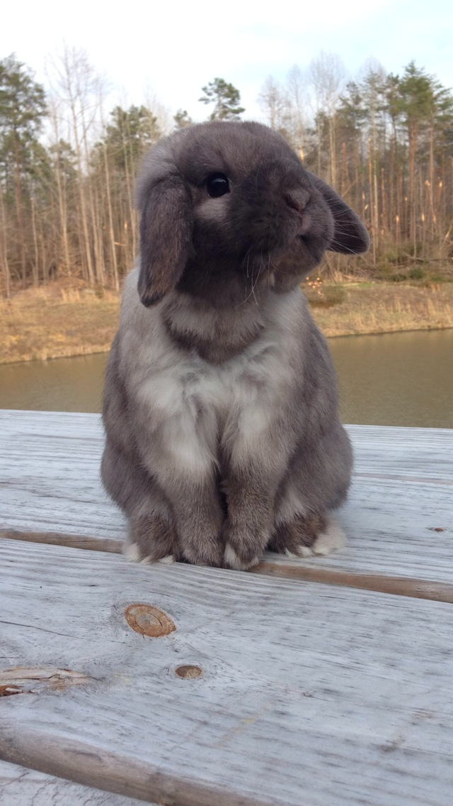
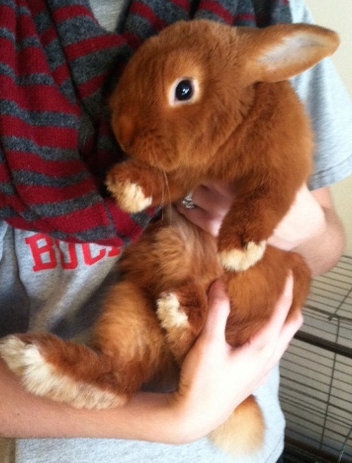
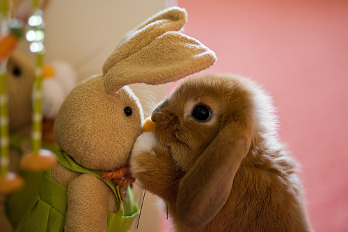
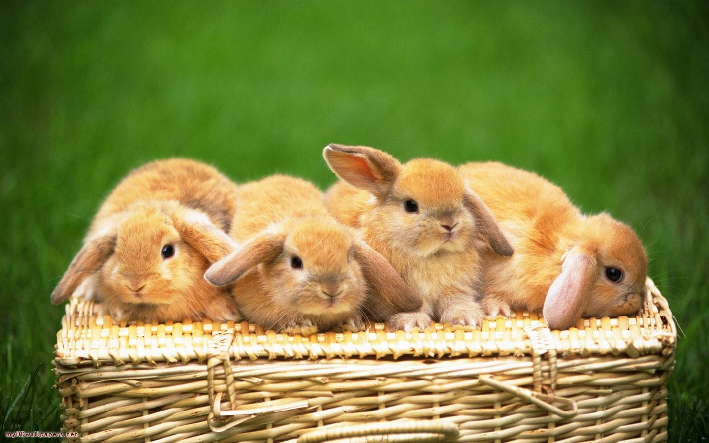
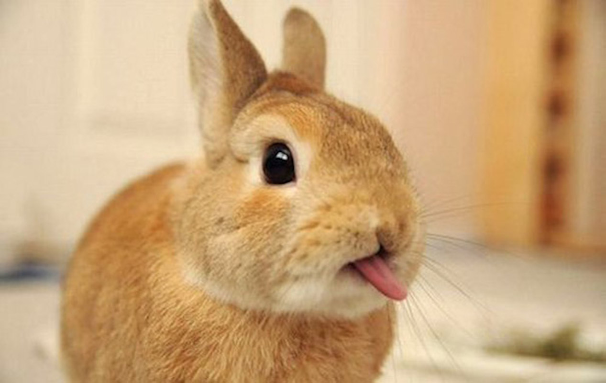

About Rabbits
X
Facts
- Rabbits have an excellent sense of smell, hearing and vision. They have nearly 360° panoramic vision, allowing them to detect predators from all directions. They can see everything behind them and only have a small blind-spot in front of their nose.
- Rabbits have extremely strong hind limbs which allow them to leap great distances. They can jump up to one metre high and three metres long.
- Rabbits are territorial animals which live in loosely organised social groups. They live in warrens comprising of an intricate series of underground tunnels with different entrances and exits.
- When rabbits ‘binky’, this is an expression of joy. They will run, jump into the air, twist their body and flick their feet.
- Rabbits are affectionate social animals that enjoy the company of other rabbits. They will perform allogrooming where two individuals will simultaneously groom each other.
- Although typically very quiet, rabbits do communicate vocally, with varying types of vocalisations communicating different messages, e.g. low humming when running around an individual is a signal of affection.
- Rabbits stand upright on their hind legs to give themselves a better vantage point to look for predators. They alert other rabbits to the presence of danger by thumping their hind legs.
- Rabbits should be kept in pairs. Companionship is key to the welfare of rabbits – without the company of another neutered rabbit they get lonely and bored. In the wild, rabbits are social creatures, a fact that doesn’t change just because they are kept as pets.
- Rabbits need an appropriate diet. Fibre, in the form of hay and grass, is the most vital food for rabbits – it’s essential for their digestive health, and they can die without it. Whilst a small daily amount of green veg is good, a diet based solely on vegetables, fruit and carrots does not provide all the nutrients that rabbits need, leaving them malnourished.
- Rabbits kept as pets should be offered shelter and hiding places - rabbits confined to open spaces with no protection will feel threatened. Predators such as dogs may also scare prey species such as rabbits.
X
Food that Rabbits Eat
Which vegetables can rabbits eat? Artichoke leaves Asparagus Baby Sweetcorns Beetroot Broccoli Brussel Sprouts Cabbage Carrots Cauliflower Celery leaves Courgette Cucumber Fennel Green beans Peas Peppers Pumpkin Radish Tops Romaine lettuce Spinach Spring Greens Squash Turnip Watercress
Which fruits can rabbits eat? Apple Apricot Banana Blackberries Blueberries Cherries Grapes Kiwi Fruit Mango Melon Nectarines Papaya Peaches Pears Pineapple Plums Raspberries Strawberries Tomatoes
Safe herbs for bunnies Basil Coriander Dill Mint (peppermint) Parsley - not too much as high in calcium Oregano Rosemary Sage Thyme
Wild garden herbs, weeds and flowers Borage Calendula Camomile Chickweed (astringent) Clover (leaves and flowers) Coltsfoot Comfrey Dandelion (diuretic properties) Goosegrass (cleavers) but may stick to coat! Lavender Mallow Nettle Nasturtium (leaves and flowers) Shepherd’s purse Sow Thistle Plantain Yarrow
X
Rabbits as Pets
Why a House Rabbit? Perhaps you’ve just adopted your first rabbit, or maybe you already have a rabbit and would like more information to help you understand her better. House Rabbit Society, a national nonprofit organization, recommends that you keep your rabbit in the house rather than outdoors. Rabbits are intelligent, social animals who need affection, and they can become wonderful companion animals if given a chance to interact with their human families.
Housetraining Rabbits may have free run of the home. However, it’s best for most–and necessary for some–to start with a space they can call their own. This can be an exercise pen, a large dog crate, a bunny proofed room, or a very large cage or condo. To make this confined time learning time, make sure that there’s a litterbox in the corner of the space that your rabbit chooses for a “bathroom.” As soon as he uses the box consistently, you can give him some freedom. Place one or more large litterboxes in corners of the running area outside the rabbit’s home base. Use only positive reinforcement (treats and praise)–never punishment.
Pictures
Here are some cute pictures of rabbits.
- 
- 
- 
- 
- 
More Information
The House Rabbit Society is a great source of information regarding both domestic and wild rabbits. This information includes articles, research, helpful guides, and links to other organizations dedicated to helping rabbits and rabbit owners.
Visit the site to learn more information by clicking the image below.